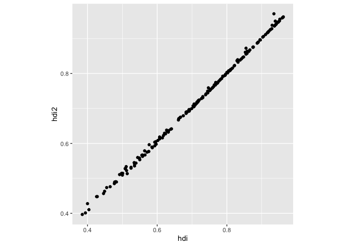

The goal of tines is to help analysts document, explore, and communicate the analytical decisions made during a data analysis. Analytical decisions are recorded as a schema of steps, and large language models are used to propose alternative choices at each step and to generate and validate the corresponding R code. A schema can be expanded into a multiverse of analyses, letting you see how your conclusions depend on the analytical choices you made.
Installation
You can install the released version of tines from CRAN with:
And the development version from GitHub with:
Example - generate alternatives and code (HDI)
Start from a schema
library(tines)
(hdi <- example_schema())
#> # A schema: HDI Example
#> id objective decision rationale inputs outputs source_schema
#> <chr> <chr> <chr> <chr> <list> <list> <lgl>
#> 1 step-scaling variables are … apply m… to put t… <lgl> <lgl> NA
#> 2 step-education combine the sc… average… the most… <lgl> <lgl> NA
#> 3 step-combine combine the th… use the… the geom… <lgl> <lgl> NAGenerate an alternative at block-combine and write the result into a yaml file:
gen_alternatives(hdi, step = "step-combine", n = 1,
file_path = here::here("inst/hdi-alt.yml"))
#(res <- expand_tines(hdi, alternatives = here::here("inst/hdi-alt.yml")))Take the original schema, original code, and the alternatives and generate a new R script that implements the alternative:
gen_code(hdi,
base_code = here::here("inst/hdi.R"),
alternative = here::here("inst/hdi-alt.yml"),
output_dir = here::here("inst/")
)Run the generated code and compare the results:
res_arith <- source(here::here("inst/alt_01_block_combine_arithmetic.R"))
#> Warning: package 'tibble' was built under R version 4.5.2
#> Warning: package 'tidyr' was built under R version 4.5.2
#> Warning: package 'purrr' was built under R version 4.5.2
#> Warning: package 'dplyr' was built under R version 4.5.2
#> Warning: package 'lubridate' was built under R version 4.5.2
#> ── Attaching core tidyverse packages ──────────────────────── tidyverse 2.0.0 ──
#> ✔ dplyr 1.2.0 ✔ readr 2.1.5
#> ✔ forcats 1.0.0 ✔ stringr 1.6.0
#> ✔ ggplot2 4.0.0 ✔ tibble 3.3.1
#> ✔ lubridate 1.9.5 ✔ tidyr 1.3.2
#> ✔ purrr 1.2.1
#> ── Conflicts ────────────────────────────────────────── tidyverse_conflicts() ──
#> ✖ dplyr::filter() masks stats::filter()
#> ✖ dplyr::lag() masks stats::lag()
#> ℹ Use the conflicted package (<http://conflicted.r-lib.org/>) to force all conflicts to become errors
#> Registered S3 method overwritten by 'tsibble':
#> method from
#> as_tibble.grouped_df dplyr
res_arith$value |>
ggplot(aes(x = hdi, y = hdi2)) +
geom_point() +
theme(aspect.ratio = 1)
Example - generate alternatives and code (football)
Currently restricted by a rate limit.
Start from a schema
library(tines)
(football <- example_football())
#> # A schema: 3 x 7
#> id objective decision rationale inputs outputs source_schema
#> <chr> <chr> <chr> <chr> <list> <list> <lgl>
#> 1 step-average-rater define t… average… incorpor… <lgl> <lgl> NA
#> 2 step-victory-tie-de… control … victory… ratios a… <lgl> <lgl> NA
#> 3 step-logistic-model estimate… fit a l… to answe… <lgl> <lgl> NAGenerate an alternative at block-combine and write the result into a yaml file:
gen_alternatives(football, id = "block-logistic-model", n = 2,
file_path = here::here("inst/football-alt.yaml"))Take the original schema, original code, and the alternatives and generate a new R script that implements the alternative:
gen_code(football,
base_code = here::here("inst/football.R"),
alternative = here::here("inst/football-alt.yaml"),
output_dir = here::here("inst/")
)Run the generated code and compare the results:
schema <- example_rdi()
code <- gen_composite_code(
schema = schema,
base_scripts = list(
spei_template = here::here("inst/spei.R"),
spi_template = here::here("inst/spi.R")
),
output_file = here::here("inst/rdi.R")
)
validate_script(here::here("inst/rdi.R"), verbose = TRUE)Example - generate alternatives and code (different random effect specifications)
library(tidyverse)
library(broom.mixed)
#> Registered S3 method overwritten by 'future':
#> method from
#> all.equal.connection parallellyGenerate a template to specify the alternatives
football_base <- read_tines(here::here("alternatives/football-grp5.yaml"))
# draft_alternatives(
# x = football_base,
# id = "specify_random_effects_structure",
# output = here::here("alternatives/football-grp5-alt.yml")
# )
res <- expand_tines(football_base, here::here("alternatives/football-grp5-alt.yml"))Generate and validate the code for each alternatives
gen_code(res, output = here::here("alternatives/"), data = "data/football.csv")
files <- list.files(here::here("alternatives"), pattern = ".R", full.names = TRUE)[2:4]
map(files, ~validate_script(.x, data = here::here("data/football.csv")))Run the script for each alternatives and save the results for comparison
valid_files <- list.files(here::here("alternatives"), pattern = "iter2.R|football-grp5.R", full.names = TRUE)
mod_comp_res <- tibble(file = valid_files) |>
rowwise() |>
mutate(
model = str_remove(basename(file), "_iter2.R|-grp5.R"),
env = list(new.env()),
res = list(source(file, local = env))
)
save(mod_comp_res, file = here::here("alternatives/mod_comp_res.rds"))Extract the model summary statistics and random effects for comparison
#load(here::here("alternatives/mod_comp_res.rds"))
map_dfr(mod_comp_res$env, ~glance(.x$glmm_model), .id = "model") |>
left_join(tibble(model = as.character(1:4), model2 = c("original", "gm1", "gm2", "gm3"))) |>
select(-c(model:logLik, df.residual)) |>
pivot_longer(cols = c(AIC, BIC, deviance), names_to = "measure", values_to = "value") |>
pivot_wider(names_from = model2, values_from = value)
map_dfr(mod_comp_res$env, ~tidy(.x$glmm_model, effect = "ran_pars", scales = "vcov"), .id = "model") |>
filter(!str_detect(term, "cov")) |>
left_join(tibble(model = as.character(1:4), model2 = c("original", "gm1", "gm2", "gm3"))) |>
select(-(model:component)) |>
pivot_wider(names_from = model2, values_from = estimate) |>
mutate(group = factor(group, levels = c("playerShort", "refNum", "refCountry"))) |>
arrange(group, term)